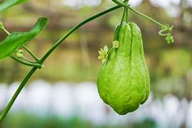
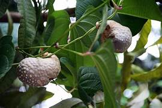
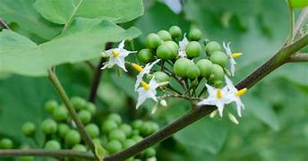
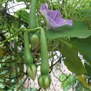
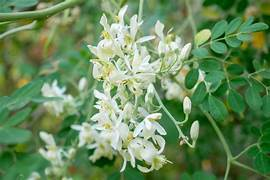
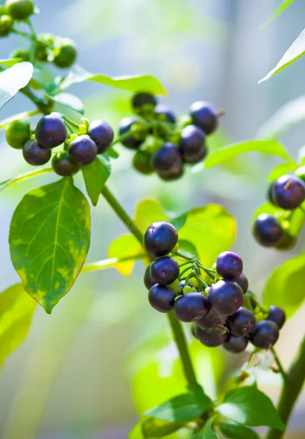
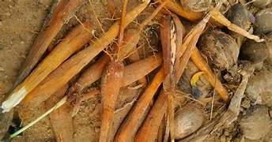

List of 10 Forgotten Vegetables

CHAYOTE (CHOW-CHOW)
Chayote, commonly known as Chow-Chow, has gradually slipped into obscurity in South India, primarily due to shifting cultural preferences, changing agricultural practices, and the availability of alternative vegetables. As South Indian society modernizes, there has been a noticeable trend towards adopting more Westernized diets, leading to a decreased demand for traditional vegetables like chayote. . . know more

AIR POTATO
The Air Potato (Dioscorea bulbifera), locally known as "Varahikand," in South India. This versatile yam is native to the tropical and subtropical regions, thriving in the warm and humid climates of states like Kerala, Tamil Nadu, Karnataka, Andhra Pradesh, Telangana, and Puducherry. . . know more

TURKEY BERRY
The Air Potato (Dioscorea bulbifera), locally known as "Varahikand," in South India. This versatile yam is native to the tropical and subtropical regions, thriving in the warm and humid climates of states like Kerala, Tamil Nadu, Karnataka, Andhra Pradesh, Telangana, and Puducherry. . . know more

CLOVE BEANS
The Air Potato (Dioscorea bulbifera), locally known as "Varahikand," in South India. This versatile yam is native to the tropical and subtropical regions, thriving in the warm and humid climates of states like Kerala, Tamil Nadu, Karnataka, Andhra Pradesh, Telangana, and Puducherry. . . know more

MORINGA FLOWERS
The Air Potato (Dioscorea bulbifera), locally known as "Varahikand," in South India. This versatile yam is native to the tropical and subtropical regions, thriving in the warm and humid climates of states like Kerala, Tamil Nadu, Karnataka, Andhra Pradesh, Telangana, and Puducherry. . . know more

SUN BERRY
The Air Potato (Dioscorea bulbifera), locally known as "Varahikand," in South India. This versatile yam is native to the tropical and subtropical regions, thriving in the warm and humid climates of states like Kerala, Tamil Nadu, Karnataka, Andhra Pradesh, Telangana, and Puducherry. . . know more

ELEPHANT YAM
The Air Potato (Dioscorea bulbifera), locally known as "Varahikand," in South India. This versatile yam is native to the tropical and subtropical regions, thriving in the warm and humid climates of states like Kerala, Tamil Nadu, Karnataka, Andhra Pradesh, Telangana, and Puducherry. . . know more

RED OKRA
The Air Potato (Dioscorea bulbifera), locally known as "Varahikand," in South India. This versatile yam is native to the tropical and subtropical regions, thriving in the warm and humid climates of states like Kerala, Tamil Nadu, Karnataka, Andhra Pradesh, Telangana, and Puducherry. . . know more
LOTUS STEM
The Air Potato (Dioscorea bulbifera), locally known as "Varahikand," in South India. This versatile yam is native to the tropical and subtropical regions, thriving in the warm and humid climates of states like Kerala, Tamil Nadu, Karnataka, Andhra Pradesh, Telangana, and Puducherry. . . know more
@copyright,2024